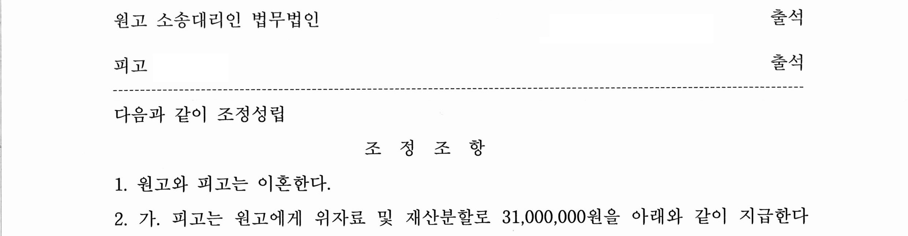
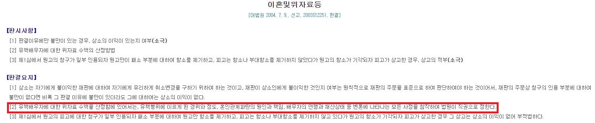

오늘 소개해드릴 사례는
피고의 외도 및 상습적인 성매매로 인해
부부관계가 파탄되어
이혼 및 재산분할 청구 사례입니다.
원고와 피고는 2018년에 혼인신고를 하여
약 2년 정도 혼인관계를 유지했습니다.
원고는 피고의 핸드폰으로
정체불명의 여성이 전화를 걸어와
대신 받았고 누군지 물으니
피고가 미혼 남성 행세를 하여
본인과 교제를 했고,
본인 말고도 여러 여성에게 접근한 사실을 폭로했습니다.
또한 성매매를 한 사실도 밝혀져
충격을 받은 원고는 저희를 찾아와
피고를 상대로 이혼 소송을 진행하게 되었습니다.
1. 기본적인 사항
① 혼인 기간 : 약 2년
② 원고 : 주부
피고 : 회사원
③ 미성년 자녀 여부 : X
2. 판결 결과(조정 결정)
원고와 피고는 이혼하며,
피고는 원고에게 위자료 및 재산분할로
31,000,000 원을 지급한다는
조정 결정을 받았습니다.

3. 위와 같은 결과가 나오게 된 원인
이 사건 혼인의 파탄은
명백히 피고의 외도로 인한 것이었습니다.
피고는 원고와의 혼인 기간 중
핸드폰 어플을 통하여 만난 여자에게
미혼자 행세를 하며,
수개월간 만남을 가졌고,
그 밖에 성매매 업소까지 다녔습니다.
원고는 피고의 위와 같은 행위를 알게 된 후
도저히 혼인생활을 지속할 수 없어
이 사건 소를 제기하게 되었습니다.
많은 분들이 위와 같은
상대 배우자의 외도 행위로 인한 위자료 청구 시
실제로 받을 수 있는 금액이
어느 정도인지에 대해 궁금해하시는데요,
우선 대법원이 위자료 산정 기준으로
제시한 요소는 다음과 같습니다.
대법원은
'유책 배우자에 대한 위자료 수액을
산정함에 있어서는,
유책행위에 이르게 된 경위와 정도,
혼인관계 파탄의 원인과 책임,
배우자의 연령과 재산상태 등
변론에 나타나는 모든 사정을 참작하여
법원이 직권으로 정한다'
라고 판시하였는데요,

결국 위자료 액수를
산정함에 있어 법원은 외도의 정도
즉, 얼마나 오랜 기간 외도를 하였는지,
외도를 시작하게 된 경위가
악질적인지여부 등을 고려하고,
나아가 그 외도로 인하여
혼인관계가 파탄에 이르렀는지여부,
배우자의 사회적 지위 및 재산상태 등을
고려하여 판단하게 됩니다.
일반적으로 혼인 기간이 길고,
외도 기간이 길며,
재산이 많을수록 위자료 액수는
높아진다고 볼 수 있습니다.
그러나 일방 배우자의 외도로 인한
상대방의 정신적 고통은 매우 큰 반면,
실무적인 위자료 액수는
그렇게 높지 않은 것이 현실인데요,
실제 사례에서는
혼인 파탄(이혼)에 이른 경우에도
1500-2500만 원 정도로
책정되는 경우가 많습니다.
많은 분들이, 외도로 인하여
일방 배우자가 받게 되는
정신적 고통은 매우 크고,
이혼을 한다고 하더라도,
혼인의 전력이 남게 되기 때문에
실제 느끼게 되는 피해에 비해
위자료 액수가 적은 것 같다는
말씀을 많이 하십니다.
분명한 것은,
법원은 원고가 청구한
위자료 액수의 범위 내에서
위자료를 산정한다는 것입니다.
실무적으로 평균적인 위자료 액수가
낮다고 하더라도,
원고가 굳이
'어차피 많은 액수의 위자료를
청구하더라도, 인정되는 액수는 낮다'
라고 생각하고,
과도하게 청구금액을
낮춰 청구할 필요는 없습니다.
위에서 평균적인 위자료 액수라고 한 것은,
말 그대로 평균적인 수치일 뿐이며,
소송 당사자는 여러 가지 상황과 정황을
어필하여 위자료 액수가 높게
책정돼야 하는 점을 주장할 수 있습니다.
실제로 위 사건에서
저희는 혼인 기간이 2년이고
미성년 자녀도 없었지만,
혼인 전 원피고가
연애했던 기간이 10년이 넘고,
혼인을 전제로 만나던 시기가
긴 만큼 부모님들과도
친하게 지냈다는 점 등에 비추어
원고가 피고의 배신행위로 인하여
입은 정신적 충격이 매우 크다는 점과
피고가 외도의 상대방에게도
본인이 유부남이라는
사실을 숨기고 만난 점 등
유책행위에 이른 경위가
매우 악질적이라는
점을 강하게 주장하였고,
그 결과 비교적 높은 위자료를
받을 수 있었습니다.
tip) 위 사건이 판결이 아닌
조정으로 하게 된 것은,
피고의 금전적 자력이 없어,
위자료에 대한 분할납부를
협의하기 위함이었습니다.
위와 같은 분할 납부
또한 불가능한 것이 아니니,
전문가의 도움을 받아
진행하시길 바랍니다.~^^